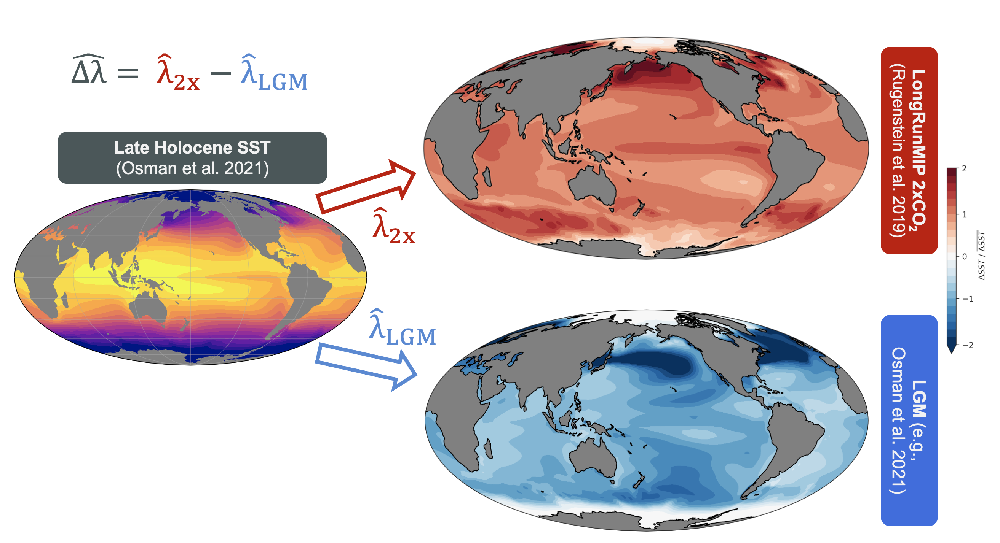
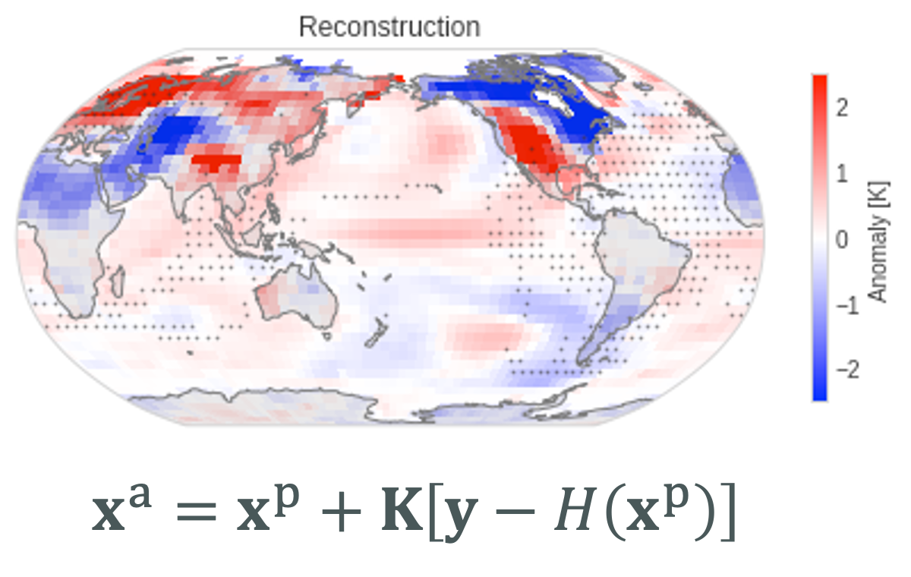
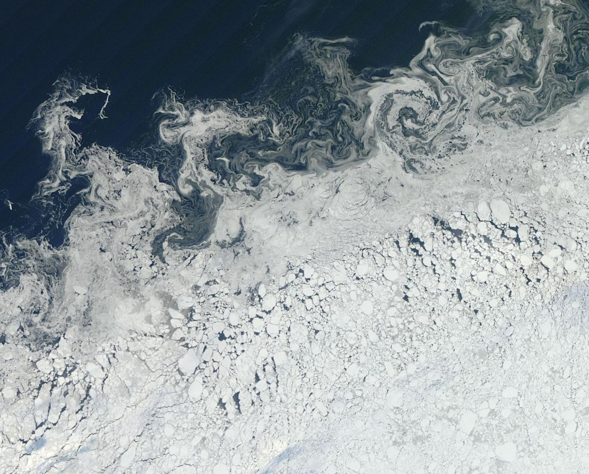

Research
I study coupled climate dynamics, including atmosphere-ocean-ice interactions, radiative feedbacks and climate sensitivity, and climate variability. I am currently investigating how climate feedbacks and Earth's energy budget have changed over the Last Glacial Maximum and recent instrumental records (1850-present). In this work, I am focusing on the role of spatial patterns of sea-surface temperature (SST) in determining radiative feedbacks, i.e., the "pattern effect."
Tools that I use: I run custom experiments in global climate models (using CESM), I use statistical methods (data assimilation and linear inverse models) to reconstruct past climate periods, and I use observations (e.g., ocean surface wave spectra from buoys and moorings, bucket measurements of SST, etc.) to motivate testable hypotheses and advance understanding of the climate system.
SST Pattern Effect in the Paleoclimate Record
This work focuses on how the spatial pattern of sea-surface temperature (SST) impacts climate feedbacks and sensitivity (the "pattern effect"). We are using atmosphere-only GCMs to quantify differences in the radiative feedback actuated by LGM SST anomalies compared to the feedback we expect from a CO2-doubling. I have been running prescribed-SST experiments in CAM4 and CAM5 with reconstructions of SST and sea ice based on paleoclimate data assimilation.
If we use the LGM as a constraint on the climate sensitivity that is relevant to modern-day global warming (as in Sherwood et al. 2020), we need to make an adjustment for how these different SST patterns (LGM vs. 2xCO2) drive different radiative feedbacks (and climate sensitivities).
Additional planned work will explore SST pattern effects in the Pliocene (a past warm period ~3 million years ago) and the recent instrumental record (1850-present).
See my most recent poster presented at CFMIP in July 2022 [Download Poster].
Cooper, V. T., et al. (in prep). The Sea Surface Temperature Pattern Effect in the Last Glacial Maximum Reduces Climate Sensitivity Estimates.
Collaborators: Kyle Armour, Cristi Proistosescu, Greg Hakim, Yue Dong, Jessica Tierney, Matthew Osman, Natalie Burls, Daniel Amrhein, Timothy Andrews, and Yi Ming.
SST anomaly patterns from 2xCO2 compared to the Last Glacial Maximum
 In atmosphere-only models with the LGM and 2xCO2 SST patterns prescribed as lower boundary conditions, we can estimate the climate feedback associated with each SST pattern. We repeat this in different atmosphere models and using different versions of LGM SST patterns, and we systematically find that the LGM feedback is less negative compared to the 2xCO2 feedback.
The pattern effect, Δλ = λ2xCO2 − λLGM, is negative for the LGM. This reduces estimates of modern-day climate sensitivity based on the LGM.
Climate Data Assimilation
I am reconstructing global SST patterns in the instrumental era (1850-present) at monthly resolution. While we have reasonable constraints on the global-mean change in surface temperature back to 1850, we do not have strong constraints (or robust uncertainty quantification) on the spatial pattern of SST change. Past attempts at infilling gaps in SST observations back to 1850 have produced different SST-anomaly patterns. Without strong constraints on SST patterns of the recent past, we are missing information on climate variability and the climate system's response to anthropogenic forcing since the preindustrial period.
Data assimilation methods enable reconstruction of full spatial fields of SST and sea ice back to 1850 at monthly temporal resolution. We apply a Bayesian statistical framework that propagates information from sparse observations (e.g., bucket measurements of SST from ships of opportunity) to unobserved regions of the globe. Data assimilation spreads information using covariances that are based on dynamics of the climate system (rather than interpolating without considering physical constraints). We are simultaneously able to quantify uncertainty in the spatial patterns.
Linear inverse models can be efficiently paired with data assimilation. After training a linear inverse model (LIM), we can use the LIM to predict SST patterns for a specific month based on our analysis of the previous month. The LIM predictions may improve our "prior" (i.e., first guess) estimate of the SST pattern, relative to the "uninformed prior" we would use in offline data assimilation, thereby enhancing our ability to constrain each month of SSTs back to 1850. The LIM is a computationally efficient statistical tool that captures the linear dynamics of a complex system.
Collaborators: Kyle Armour and Greg Hakim.

Reconstruction of global SST and land surface temperature in the 1850s.
Illustrative reconstruction of the global pattern of surface temperature informed by a small subset of observations (gray dots).The observations are a representative example of the available data for reconstructing one month in the 1850s. The reconstruction uses an ensemble Kalman filter.
Polar Climate: Coupled Interactions between Sea Ice and Ocean Surface Waves
With Arctic Sea Ice retreating due to global warming and Arctic amplification, there are large regions of the Arctic Ocean which are now ice-free during at least part of the year. It is well established that ocean surface waves can develop in these open water regions and propagate into the pack ice. Waves fracture ice into smaller "ice floes" and can cause a positive feedback during the summer alongside the ice-albedo feedback.
In wave observations from the Arctic, we found something that was initially unexpected. At distances of more than 100 km inside the large-scale sea ice edge, measurements showed locally generated wind waves during the Arctic summer. We found that these waves develop in pockets of open water within the pack ice.
I've conducted a series of experiments in a global coupled wave-ice model (using the CESM framework and building on Roach et al. 2019). These experiments attempt to reproduce the local wind waves in partial sea ice cover and explore how uncertainties in wave-ice physics affect polar oceans in global, climate-scale simulations.
See a poster and paper I've prepared on this topic below.
[Download Polar AMS 2021 Poster].
Cooper, V. T., Roach, L. A., Thomson, J., Brenner, S. D., Smith, M. M., Meylan, M. H., and C. M. Bitz. Wind waves in sea ice of the western Arctic and a global coupled wave-ice model (2022). Philosophical Transactions of the Royal Society A. 380:20210258. https://doi.org/10.1098/rsta.2021.0258
Collaborators: Lettie Roach, Cecilia Bitz, Jim Thomson, Sam Brenner, Maddie Smith, and Michael Meylan.

Marginal Ice Zone with Fragmented Ice Floes (Central Arctic, Oct. 2018)
Source: NASA EOSDIS Worldview.Ocean surface waves affect sea ice near the ice edge, but waves can also develop in the smaller areas (width of ~10 km) of open water within the pack ice.
We've characterized those locally generated waves in observations and investigated how they could affect sea ice in a climate-scale coupled model.